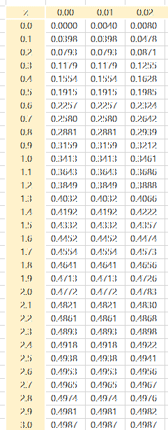

6강에서 뺀 슬라이드
2026-10-07 보관
이 파일은 무엇인가
6강 「회귀분석 (2)」에서 뺀 슬라이드를 버리지 않고 모아 둔 것
- 퀴즈 1 풀이 (2025-2학기 퀴즈) — 2026-10-07 에 뺌 (본편 3~6쪽). 교수 요청으로 2026-2학기 퀴즈 1(참·거짓 · 표준점수 · 회귀직선의 기울기) 풀이 세 장으로 바꿨다. 도수분포표 · TOEIC 정규분포 · 참·거짓 문항과 표준정규분포표(tb-reg2-z-table.png)는 여기에만 남는다
→ 배포하지 않는다. course.json 의 강의 목록에도 넣지 않는다.
퀴즈 1 풀이
1. 다음의 히스토그램은 200명의 교육연수에 대한 분포이다(괄호 안은 밀도). 이를 참고하여 아래의 도수분포표를 작성하시오.
(단, 계급구간은 좌측경계는 포함하되 우측경계는 포함하지 않음)
| 계급 | 절대빈도(명) | 상대빈도(%) | 밀도 |
|---|
퀴즈 1 풀이
2. TOEIC 시험의 점수를 집계한 결과 평균이 750점이고, 표준편차는 100인 정규분포곡선을 따른다고 한다.
500점~600점 사이에는 대략 몇 %의 학생이 있겠는가? 답과 풀이과정을 쓰시오(아래 그림은 표준정규분포표이다).

퀴즈 1 풀이
2. TOEIC 시험의 점수를 집계한 결과 평균이 750점이고, 표준편차는 100인 정규분포곡선을 따른다고 한다.
500점~600점 사이에는 대략 몇 %의 학생이 있겠는가? 답과 풀이과정을 쓰시오(아래 그림은 표준정규분포표이다).
$X \sim N(750,\ 100^2)$
〈정규분포를 따르는 자료의 표준화〉
P(−2.5 ≤ Z ≤ −1.5)
= 0.4938 − 0.4332 = 0.0606
답: 6.06%
퀴즈 1 풀이
3. 다음 명제의 참과 거짓을 판별하시오.
(1) 어떤 데이터 분포가 왼쪽으로 길게 늘어진(left-skewed) 형태를 보일 때 평균, 중앙값, 최빈값의 일반적인 크기 관계는 최빈값 > 중앙값 > 평균이다. (참, 거짓) → 참
(2) 히스토그램에서 상대도수가 아닌 밀도를 활용하는 이유는 모든 막대의 높이를 비슷하게 만들어 미적으로 보기좋게 하기 위함이다. (참, 거짓) → 거짓 — 계급폭이 다른 구간을 견주기 위해서다
(3) 자료의 표준화는 자료에서 평균을 빼고 표준편차로 나누어 평균은 1, 표준편차는 0으로 만드는 과정이다. (참, 거짓) → 거짓 — 평균 0, 표준편차 1 이다